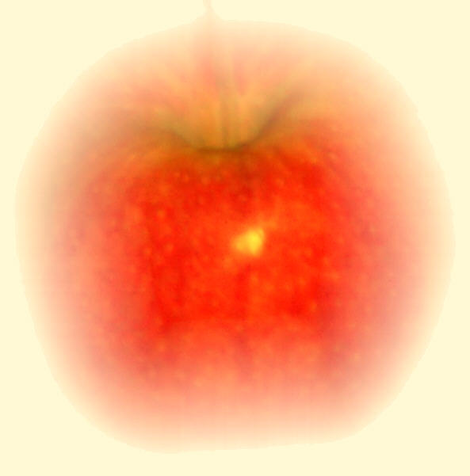

| Feature Article - March 2020 |
| by Do-While Jones |
Do apples have supernatural powers?
|
 |
|---|
Legend says that a falling apple inspired Sir Isaac Newton to think about gravity. I don't know if that is true, but an article by Marley Brown about the origin and domestication of apples inspired these thoughts about evolution. According to Brown,
|
Researchers are now one step closer to understanding how apples made the journey from wild populations to grocery stores and farmers['] markets around the world, and how that process differed from the domestication of grasses such as wheat and rice. The first people to make use of these grasses encountered fields of densely packed wild cereals. The seeds of these self-pollinating annuals drop to the ground when ripe, allowing a fresh crop to grow each year. ... Apple trees, on the other hand, reproduce poorly when fallen apples are left to rot, or when second-generation trees grow too close to their parents. They rely on animals--including humans--to disperse their seeds and carry out pollination. 1 |
It is certainly true that "the apple doesn't fall far from the tree." Could animals have been responsible for spreading the seeds? How would that symbiotic relationship evolve?
Nearly every day for more than 17 years, I walked my dog in the Mojave Desert. After he squatted down to do his business, he would stay in the same place, using his front paws to dig a hole, pushing the sand between his hind legs to cover what he had done. When I got him as a puppy I rather easily taught him to go outside when nature called. I never tried to teach him to cover his feces; but he did it instinctively. Was burying his poop a random behavior that gave him a survival advantage? I can't imagine what the advantage would be. Did he know that if his excrement contained a seed, in a few years it would grow into a tree which would provide him with more fruit? My dog was smart--but he wasn't that smart.
I can't believe that my dog was the only animal that instinctively dispersed seeds in a cloak of fertilizer, and buried them. Could that behavior have evolved independently in many different species? I doubt it.
I had never thought much about apples before, so I decided to see what Wikipedia said about how apples reproduce. (Yes, we know Wikipedia isn't a reliable source because it is heavily biased toward evolutionary thought. We use Wikipedia so we can't be accused of using a "crackpot creationist source.")
|
Apples are self-incompatible; they must cross-pollinate to develop fruit. During the flowering each season, apple growers often utilize pollinators to carry pollen. Honey bees are most commonly used. 2 |
Let's think about that. Apple trees can't pollinate their flowers using their own pollen. It takes two to tango, and it takes at least two apple trees to produce apples. What did the very first apple tree do? If it was the very first apple tree, there was not another apple tree around to pollinate its flowers. If the flowers of the first apple tree didn't get pollinated, no apples (with seeds inside) would have developed. When that first apple tree died, that would be the end of it.
Evolutionists probably would say that the first wild apples could fertilize themselves, and that the need for a partner evolved later, and drove self-pollinating apple trees to extinction. There is no evidence for that, and it doesn't make any sense from a survival advantage. Why would a tree that could pollinate itself evolve into one that needed another tree near enough that wind or bees could bring pollen to it?
But there is more.
|
Many apples grow readily from seeds. However, more than with most perennial fruits, apples must be propagated asexually by grafting to obtain the sweetness and other desirable characteristics of the parent. This is because seedling apples are an example of "extreme heterozygotes", in that rather than inheriting genes from their parents to create a new apple with parental characteristics, they are instead significantly different from their parents, perhaps to compete with the many pests. ... Because apples do not breed true when planted as seeds, grafting is generally used to produce new apple trees. The rootstock used for the bottom of the graft can be selected to produce trees of a large variety of sizes, as well as changing the winter hardiness, insect and disease resistance, and soil preference of the resulting tree. Dwarf rootstocks can be used to produce very small trees (less than 3.0 m (10 ft) high at maturity), which bear fruit earlier in their life cycle than full size trees. Dwarf rootstocks for apple trees can be traced as far back as 300 BC, to the area of Persia and Asia Minor. Alexander the Great sent samples of dwarf apple trees to Aristotle's Lyceum. Dwarf rootstocks became common by the 15th century and later went through several cycles of popularity and decline throughout the world. The majority of the rootstocks used today to control size in apples were developed in England in the early 1900s. 3 |
Somebody had the bright idea to graft the branch of one apple tree onto a different apple tree. It didn't happen by accident. Grafting branches of one kind of apple tree to the trunk of a different kind of tree was done intentionally by an intelligent designer. Who thinks of cutting off a branch from one tree and sticking it in a slot in the trunk of another tree? Apparently somebody did! He was either very intelligent, or crazy enough to wonder what would happen if he did it. Of course, after the first person did it successfully, lots of other people got into the act.
Selective breeding, and grafting, to produce apples with particular characteristics is common.
|
There are more than 7,500 known cultivars [varieties] of apples. ... . Most of these cultivars are bred for eating fresh (dessert apples), though some are cultivated specifically for cooking (cooking apples) or producing cider. Cider apples are typically too tart and astringent to eat fresh, but they give the beverage a rich flavor that dessert apples cannot. 4 |
Selective breeding mixes up genes to obtain the desired characteristics, and apples have lots of genes to work with.
|
In 2010, an Italian-led consortium announced they had sequenced the complete genome of the apple in collaboration with horticultural genomicists at Washington State University, using 'Golden Delicious'. It had about 57,000 genes, the highest number of any plant genome studied to date and more genes than the human genome (about 30,000). 5 |
Each of those 57,000 genes has several different alleles (variations), the combination of which produces particular characteristics. If you combine the right alleles, you will get the desired result, within limits. Despite all that breeding and grafting, apples are still apples. But where did the 57,000 genes necessary to create all those varieties of apples come from?
It isn't just chickens that have a chicken-or-the-egg problem. Wheat and rice have the same trouble, too. Where did the first kernel of wheat come from? If it came from a stalk of wheat, what caused that stalk of wheat to grow if it didn't come from a kernel of wheat? The same question could be asked of rice, apples, and every other living thing, too.
But, as Brown points out, apples have the problem in spades. The first wheat seed could have been produced from a single stalk of wheat (assuming the wheat came first). The first apple seed would have come from two apple trees (which must have magically appeared close to each other). Unlike wheat, which just falls to the ground and sprouts where it lands, the first apple seed would have had to have been moved away from the mother tree. So, the question is, "Which came first, two apple trees or the seed?" The idea that sexual reproduction evolved by unguided natural processes is fantastically illogical.
It has been truly said that there are only two classes of people in the world. One class of people divides things into two classes. The other class doesn't.
The first class of people would divide every process into two classes--natural and supernatural. The other class would not because they don't think there are any supernatural processes. How would those two classes of people look at apples?
First, you would have to differentiate a supernatural process from a natural process. That's harder to do than you might expect. Our perhaps overly simplistic definition is that a supernatural process involves a miracle, where a miracle is defined to be an unusual exception to natural laws.
An apple falls from a branch onto the ground. That's certainly a natural process. There is nothing miraculous about it. Gravity pulls the apple down until the apple's stem can't take it any more, and it falls from the branch. Force equals mass times acceleration, and down it comes.
The apple lays on the ground and rots. That's also a natural process. It's the Second Law of Thermodynamics in action. The chemical energy organized inside the apple disorganizes into the environment to equalize the distribution of energy.
But then, something possibly unnatural happens. Somehow those 57,000 genes inside the apple seed respond to moisture and temperature cycles causing the seed to sprout. A stem with primary leaves go up, and roots go down. The leaves extract energy from sunlight, and the roots extract water and nutrients from the soil, which the plant uses to grow into a tree with branches. Eventually, the tree matures to the point where it produces flowers at the proper season, which attract bees which have pollen from another apple tree stuck to them. Some of that pollen rubs off of the bee and fertilizes the ovule. The fertilized ovule grows into an apple.
Is the transformation of a seed into a tree bearing fruit really a natural process? Does it violate natural laws?
A five-ounce Gala apple hanging on a branch seven feet off the ground has 2.2 foot-pounds of potential energy. If properly harnessed, it could do 2.2 foot-pounds of work when it falls. I don't know how many calories are in an apple because I don't care. I am going to eat it no matter how much sugar is in it! All that matters is that it has more than zero calories of chemical energy stored in it.
But wait! Hasn't the apple tree violated a natural law by increasing the organization of energy? It must have, because when the apple falls from the tree (equalizing potential energy) and rots (equalizing chemical energy), those two processes obey the laws of thermodynamics.
If a rotten apple on the ground suddenly became fresh, and jumped up off the ground and attached itself to the branch of an apple tree, that would certainly be miraculous. Un-rotting, and falling up, are two processes which violate natural laws.
If a rotten apple on the ground suddenly became a fresh apple on a branch, it would be a miracle. Why would a rotten apple on the ground gradually becoming a tree full of apples be any less miraculous?
Since potential energy is independent of path, it doesn't matter how, or how long, the apple was raised off the ground. Potential energy is determined entirely by height, regardless of how that height was attained and how long it took to attain it.
On the other hand, miracles are miraculous because they don't happen every day. Miracles are surprising and out of the ordinary. It isn't surprising or out of the ordinary for an apple tree to produce apples. There's nothing miraculous about an apple tree producing apples, is there? Producing apples is what an apple tree naturally does.
Let's clarify that. Producing apples is what a living apple tree naturally does. It would be miraculous if a dead apple tree produced apples. So, there must be a connection between life and whether or not a process is natural or supernatural.
Life is hard to define.
|
There is currently no consensus regarding the definition of life. One popular definition is that organisms are open systems that maintain homeostasis, are composed of cells, have a life cycle, undergo metabolism, can grow, adapt to their environment, respond to stimuli, reproduce and evolve. 6 |
(The last two words in Wikipedia's definition are unnecessary and prejudicial. If there is no evolution, there aren't any living things by that definition! Living things exist, therefore the theory of evolution must be true! That is just one example of Wikipedia's bias toward evolution.)
I would prefer to say that anything that isn't dead is alive. (It's that dividing into two classes thing, again.) Of course, that doesn't really solve the problem, unless you can define what "dead" means. Since death is also difficult to define, there are lawsuits about what to do with people on life support.
A rather crass way of saying that someone has died is to say, "He has assumed room temperature." That's because heat (that is, energy) distributes itself evenly through natural processes. Dead things do not create organized pockets of energy. Dead things obey all the natural laws of thermodynamics, chemistry and physics.
Living things don't obey all those laws. Living things sometimes lift heavy objects up to a higher potential energy state. Internally or externally they sometimes combine chemicals to form chemical compounds (like sugars or gasoline) which store energy which they can release later when needed. That's not natural--but do we dare call it "supernatural?"
Are plant life, animal life, and human life, natural or supernatural?
The theory of evolution is based on the notion that there are no supernatural processes, so all forms of life must be the result of natural processes. That means that the life cycle of an apple tree has to be a natural process. If so, it is a natural process that runs afoul of the laws of thermodynamics because the tree causes heat (disguised in various forms of energy) to flow from a cold place to a hot place. Furthermore, it must be a circular natural process which has no discernable beginning (the chicken-or-egg problem). Natural processes don't violate the laws of thermodynamics, and aren't eternal. If the life cycle of an apple tree violates natural laws, then it must involve some supernatural processes. The theory of evolution is based on the notion that there are no supernatural processes, so it is partly based on a false premise.
| Quick links to | |
|---|---|
| Science Against Evolution Home Page |
Back issues of Disclosure (our newsletter) |
| Web Site of the Month |
Topical Index |
Footnotes:
1
Marley Brown, Archaeology, January/February 2020, "On the Origin of Apples", https://www.archaeology.org/issues/364-2001/features/8239-kazakhstan-apple-domestication
2
https://en.wikipedia.org/wiki/Apple#Pollination
3
https://en.wikipedia.org/wiki/Apple#Breeding
4
https://en.wikipedia.org/wiki/Apple#Cultivars
5
https://en.wikipedia.org/wiki/Apple#Pollination
6
https://en.wikipedia.org/wiki/Life